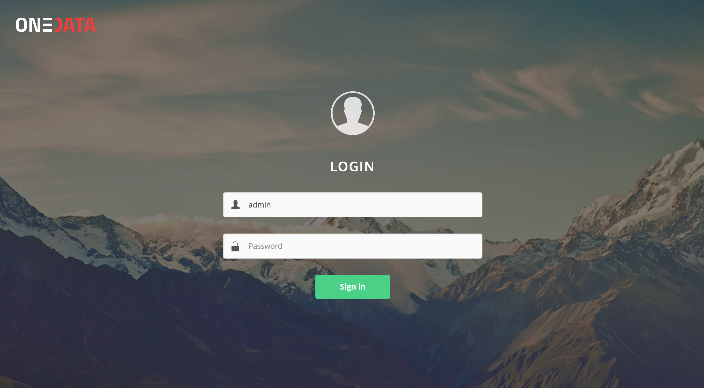
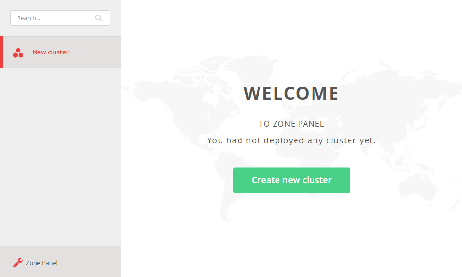
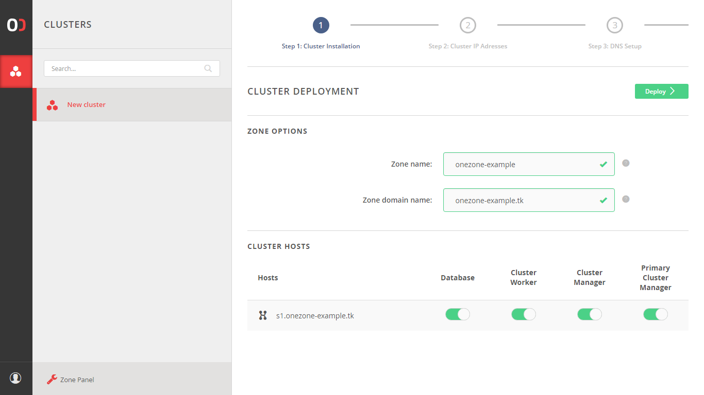
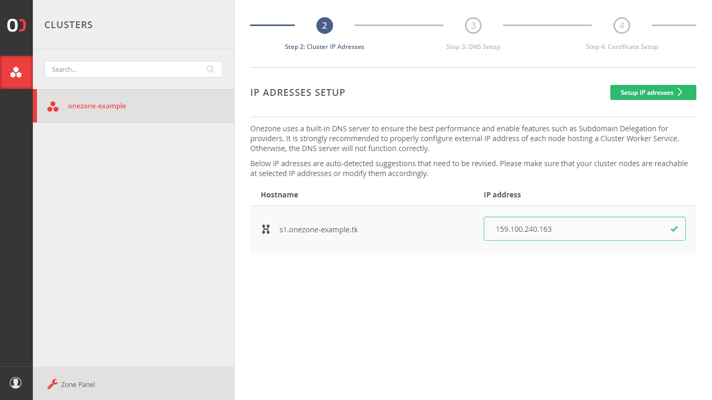
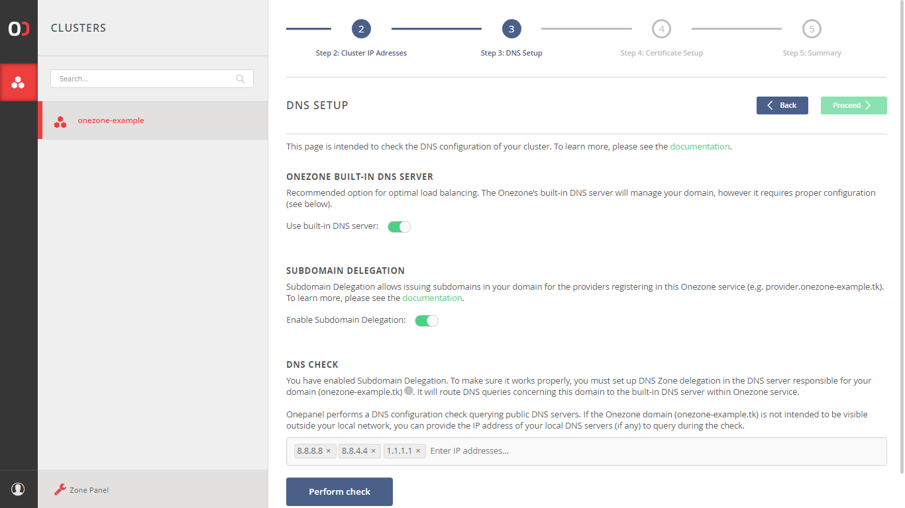
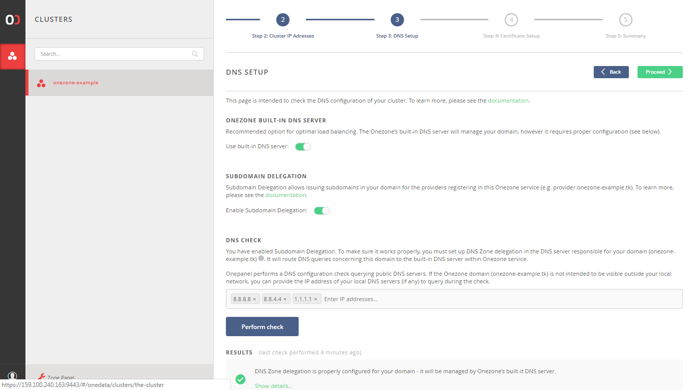
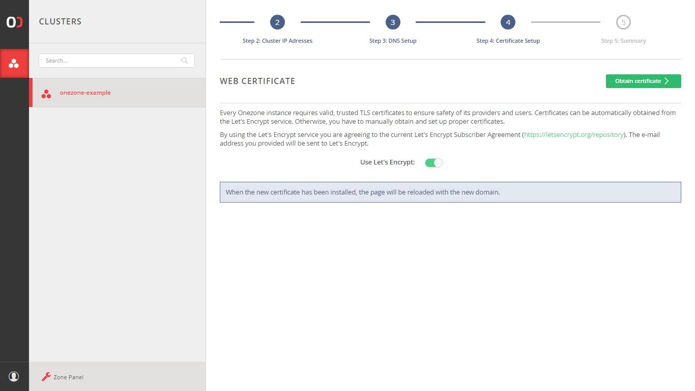
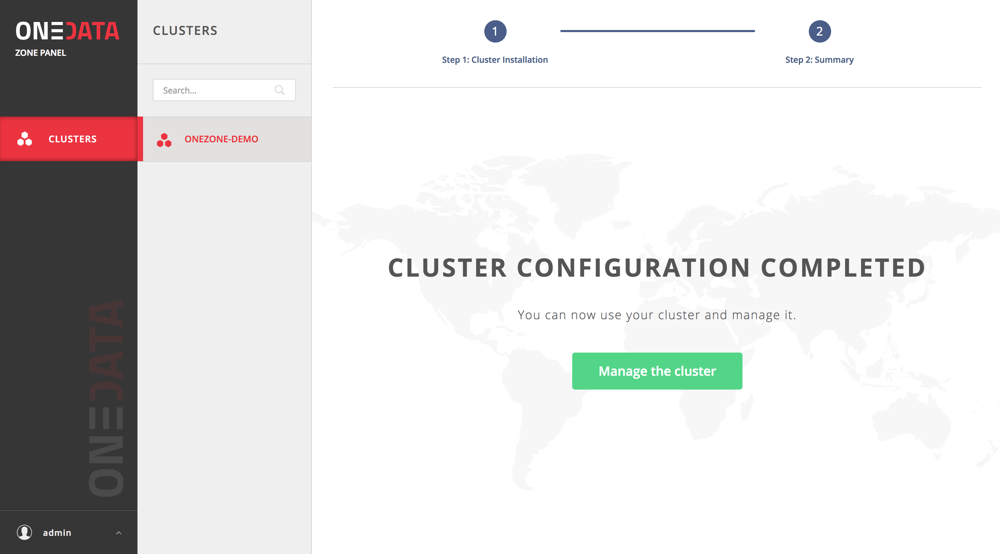

Onezone installation tutorial
WARNING: Below tutorial is outdated and some of the information might be no longer valid
for versions 19.02 and 20.02. It is recommended to use the instructions and
examples provided in the
onedata-deployments repository.
This section describes the steps needed to install and configure Onezone service in production, either using Docker images or directly using our packages.
Installation
Onezone can be deployed using our official Docker images on any Linux OS supporting Docker or using packages that we provide for Ubuntu Xenial and CentOS 7). Docker based deployment is the recommended setup due to minimal requirements and best portability.
Onezone service can be deployed on multiple nodes for high-availability purposes, in such case either the Docker setup or the packages need to be installed on all nodes where the Onezone should be deployed. This tutorial assumes Onezone will be installed on a single node.
Prerequisites
In order to ensure optimum performance of the Onezone service, several low-level settings need to be tuned on the host machine. This applies to both Docker based as well as package based installations, in particular to nodes where Couchbase database instance are deployed.
After these settings are modified, the machine needs to be rebooted.
Increase maximum number of opened files
In order to install Onezone service on one of the supported operating systems, first make sure that the maximum limit of opened files is sufficient (preferably 63536, but below /proc/sys/fs/file-max). The limit can be checked using:
$ ulimit -n
1024
If necessary, increase the limit using:
$ sudo sh -c 'echo "* soft nofile 63536" >> /etc/security/limits.conf'
$ sudo sh -c 'echo "* hard nofile 63536" >> /etc/security/limits.conf'
It might be also necessary to setup the limit in /etc/systemd/system.conf:
$ sudo sh -c 'echo DefaultLimitNOFILE=65536 >> /etc/systemd/system.conf' $ sudo systemctl daemon-reexec
Swap preference settings
Make sure that the swap preference (i.e. swappiness) is set to 0 (or at most 1 - see here for details):
$ cat /proc/sys/vm/swappiness
60
and if necessary decrease it using:
$ sudo sh -c 'echo "vm.swappiness=0" >> /etc/sysctl.d/50-swappiness.conf'
Disable Transparent Huge Pages feature
By default, many Linux machines have the Transparent Huge Pages feature enabled, which improves apparent performance of machines running multiple applications at once, however it deteriorates the performance of most database-heavy applications, such as Onezone.
These settings can be checked using the following commands (here the output shown is the expected setting):
$ cat /sys/kernel/mm/transparent_hugepage/enabled
always madvise [never]
$ cat /sys/kernel/mm/transparent_hugepage/defrag
always madvise [never]
If any of the settings is different than the above, they should be changed permanently, which can be achieved for instance by creating a simple systemd unit file /etc/systemd/system/disable-thp.service:
[Unit]
Description=Disable Transparent Huge Pages
[Service]
Type=oneshot
ExecStart=/bin/sh -c "/bin/echo 'never' | /usr/bin/tee /sys/kernel/mm/transparent_hugepage/enabled"
ExecStart=/bin/sh -c "/bin/echo 'never' | /usr/bin/tee /sys/kernel/mm/transparent_hugepage/defrag"
[Install]
WantedBy=multi-user.target
and enabling it on start using:
$ sudo systemctl enable disable-thp.service
$ sudo systemctl start disable-thp.service
Node hostname
Make sure that the machine has a resolvable, domain-style hostname (it can be Fully Qualified Domain Name or just a proper entry in /etc/hostname and /etc/hosts) - for this tutorial it is set to onezone-example.com.
Following command examples assumes an environment variable ONEZONE_HOST is available, for instance:
$ export ONEZONE_HOST="onezone-example.com"
Python
Make sure that python 2.x is installed on the machine. For example:
$ python -V
Python 2.7.12
Docker based setup
Onezone installation using Docker is very straightforward. This type of deployment requires that docker and docker-compose have been installed on your server.
Customizing Onezone Docker Compose script
In case of Docker based deployment all configuration information needed to install Onezone can be included directly in the Docker Compose script. This tutorial assumes that all Onezone configuration and log files will be stored in the directory /opt/onedata/onezone on the host machine, but you can use any directory to which Docker has access to. Make sure the partition where the /opt directory is mounted has at least 20GB of free space for logs and database files.
The following assumes you have prepared the following directory structure:
$ sudo mkdir -p /opt/onedata/onezone
$ sudo mkdir /opt/onedata/onezone/certs
$ sudo mkdir /opt/onedata/onezone/persistence
Create the following Docker Compose file in /opt/onedata/onezone/docker-compose.yml:
version: '2.0'
services:
node1.onezone.localhost:
# Onezone Docker image version
image: onedata/onezone:21.02.1
# Hostname (in this case the hostname inside Docker network)
hostname: node1.onezone.localhost
# dns: 8.8.8.8 # Optional, in case Docker containers have no DNS access
container_name: onezone-1
# Mapping of volumes to Onezone container
volumes:
- "/var/run/docker.sock:/var/run/docker.sock"
# Onezone runtime files
- "/opt/onedata/onezone/persistence:/volumes/persistence"
# OpenID configuration
- "/opt/onedata/onezone/auth.config:/etc/oz_worker/auth.config"
# Uncoment lines below if you disabled the built-in Let's Encrypt client
## SSL certificate
#- "/ozt/onedata/onezone/certs/cert.pem:/etc/oz_panel/certs/web_cert.pem"
## SSL certificate key
#- "/ozt/onedata/onezone/certs/key.pem:/etc/oz_panel/certs/web_key.pem"
## Certificate chain for the TLS certificate above
#- "/ozt/onedata/onezone/certs/cacert.pem:/etc/oz_panel/certs/web_chain.pem"
# Expose the necessary ports from Onezone container to the host
ports:
- "53:53"
- "53:53/udp"
- "443:443"
- "80:80"
- "9443:9443"
environment:
# Force Onepanel to read configuration from environment variable
ONEPANEL_BATCH_MODE: "true"
# Provide initial Onezone configuration for Onepanel in environment variable
ONEZONE_CONFIG: |
# Cluster configuration allows to specify distribution of Onezone
# components over multiple nodes - here we deploy entire service on
# a single node
cluster:
domainName: "onezone.localhost"
autoDeploy: true
nodes:
n1:
hostname: "node1"
managers:
mainNode: "n1"
nodes:
- "n1"
workers:
nodes:
- "n1"
databases:
# Per node Couchbase cache size in MB for all buckets
serverQuota: 4096
# Per bucket Couchbase cache size in MB across the cluster
bucketQuota: 4096
nodes:
- "n1"
onezone:
# Assign custom name to the Onezone instance
name: "ONEZONE-DEMO"
domainName: "onezone-example.com"
# Automatically obtain SSL certificates
letsEncryptEnabled: true
onepanel:
# Create initially 1 administrator and 1 regular user
users:
"admin":
password: "password"
userRole: "admin"
"user":
password: "password"
userRole: "regular"
To install the necessary Docker images on the machine run:
$ docker-compose -f /opt/onedata/onezone/docker-compose.yml pull
Installation from distribution packages
The following instructions are based on Ubuntu Xenial.
Package installation
Now in order to install Onezone service, it should be enough to execute our install script, which automatically detects operating system version, adds our repository and installs required packages:
$ curl -sS http://get.onedata.org/onezone.sh | bash
Alternatively, the necessary packages can be installed manually. For Ubuntu:
# Add Onedata package repository
$ sudo sh -c 'curl -sSL http://packages.onedata.org/onedata.gpg.key | apt-key add -'
$ sudo sh -c 'echo "deb http://packages.onedata.org/apt/ubuntu/xenial xenial main" > /etc/apt/sources.list.d/onedata.list'
$ sudo sh -c 'echo "deb-src http://packages.onedata.org/apt/ubuntu/xenial xenial main" >> /etc/apt/sources.list.d/onedata.list'
# Update package list
$ sudo apt update
# Install packages
$ export ONEPANEL_AUTOSTART=false # Disable automatic Onepanel start
$ sudo apt install oz-panel
$ sudo apt install cluster-manager
$ sudo apt install oz-worker
$ sudo apt install couchbase-server-community
$ sudo apt install onezone
Sometimes Couchbase service fails to start automatically during installation, in such case it has to be restarted manually using
$ sudo systemctl restart couchbase-server.service
Configuration
Configuring authentication methods
Currently Onezone supports 3 general modes of authentication, i.e.: basic authentication, OpenID Connect and SAML. Default configuration supports only basic authentication using admin accounts. It is recommended to deploy the service with default auth configuration, and then proceed with configuring other methods:
Setting up certificates
Since release 18.02.0-rc10, Onezone supports automatic certificate management backed by Let's Encrypt. To use this option, it is only necessary to enable this feature in Onezone Docker Compose configuration file (see above) or via GUI.
If you prefer to obtain and install certificates for Onezone service manually, modify the Docker Compose file to mount PEM files inside the container using paths listed in TLS certificate management.
Security and recommended firewall settings
Onezone service requires several ports (53,53/UDP,80,443,9443) to be opened for proper operation. Some of these ports can be limited to internal network, in particular 9443 for Onepanel management interface.
Furthermore, on all nodes of Onezone deployment where Couchbase instance is deployed, it exposes several additional ports. This means that the Couchbase security guidelines should be also followed.
For more information about ports setup see Firewal setup
Cluster configuration for package based deployment
This tutorial assumed that the cluster configuration is provided directly in
the Docker Compose file. However for package based installation the cluster
configuration has to be performed separately. It can be done using the
Onepanel web based interface. Onepanel administration service is
automatically started after installation and can be accessed from
https://$ONEZONE_HOST:9443 port to configure Onezone instance. In case
it was not started properly, it can be restarted using systemctl command:
$ sudo systemctl restart oz_panel.service
Open https://$ONEZONE_HOST:9443 using any web browser and continue through the following steps:
Login using default credentials specified in (e.g.
admin:password)
Click "Create new cluster"

Select hosts in the cluster which will have specific roles (leave as is)

Check the IP address and change it if necessary. Click "Setup IP address".

Check the DNS settings and click "Perform check". If it fails then check that the DNS records, which are displayed exists.

Click "Proceed" when the DNS check succeeds.

Click "Obtain certificate" to automatically obtain a web certificate from Let's encrypt.

- Wait for installation to complete

After this step succeeds, Onezone should be ready and accessible at https://$ONEZONE_HOST
DNS records setup for subdomain delegation
Onezone has its own DNS server, automatically deployed on every node of the cluster. Its purpose is to simplify cluster scaling and allow for subdomain delegation for Oneproviders - i.e. allocating subdomains of the Onezone domain for the providers and resolving DNS queries in their name. In order for subdomain delegation to work properly, it is necessary to set up DNS zone delegation in the DNS server responsible for your domain. It should delegate management of the Onezone domain and its subdomains to the Onezone DNS server.
Assuming your Onezone domain is onezone-example.com you need to set following records at your DNS provider:
NS records pointing to ns1.onezone.org, ns2.onezone.org etc.. Number of those subdomains depends on the number of nodes in your Onezone cluster. If there are more than 10 nodes, only the first ten should be inserted.
NOTE: even if your installation uses a single node, subdomain
ns2.is also available in order to comply with some registrars minimum of two NS records. This option can be configured in theapp.configfile. Glue records, i.e. A records with namesns1.onezone-example.com,ns2.onezone-example.cometc. and IPs of your cluster nodes.
Example: your Onezone deployment (onezone-example.com) consists of 3 nodes:
150.1.0.2, 150.1.0.3 and 150.1.0.4
In the DNS responsible for the onezone-example.com domain (usually the server is administered by the domain provider, or there is a dedicated DNS server for your organization), set the following records:
| Domain | Record | Value |
|---|---|---|
| onezone-example.com. | NS | ns1.onezone-example.com. |
| onezone-example.com. | NS | ns2.onezone-example.com. |
| onezone-example.com. | NS | ns3.onezone-example.com. |
| ns1.onezone-example.com. | A | 150.1.0.2 |
| ns2.onezone-example.com. | A | 150.1.0.3 |
| ns3.onezone-example.com. | A | 150.1.0.4 |
This way, all queries concerning the onezone-example.com domain will be routed to the DNS servers running on Onezone cluster nodes.
Further fine-tuning of the Onezone DNS service can be achieved via the overlay.config file (read more here).
Available options are:
- setting static records with predefined values. Variables:
dns_static_a_recordsdns_static_ns_recordsdns_static_txt_recordsdns_static_mx_recordsdns_static_cname_records
- parameters used by SOA and NS records:
dns_soa_admin_mailboxdns_ns_max_entriesdns_ns_min_entriesdns_soa_serialdns_soa_refreshdns_soa_retrydns_soa_expiredns_soa_minimum
- TTLs of DNS records:
anssoatxtmx
Details about format needed in those variables can be read in comments of the app.config file.
Advanced configuration
After installation several Onezone parameters can be further fine-tuned using erlang application configuration files.
The basis for configuration are read-only files located at /var/lib/oz_worker/app.config and /var/lib/oz_panel/app.config. They can be used for reference for defaults in use and extensive comments explaining containted variables, but should not be modified.
Settings contained in the app.config files are overriden by configuration written by Onepanel during deployment in autogenerated.config files and by the custom user config file overlay.config.
The autogenerated file is located at /etc/oz_worker/autogenerated.config and should not by modified by hand.
For custom configuration a new file /etc/oz_worker/overlay.config or /etc/oz_panel/overlay.config should be created. Variables set there will override those from app.config and autogenerated.config files.
Running
Running Docker based installation using systemd
Docker based installation can be conveniently managed using a systemd service unit. Simply create a file with path /etc/systemd/system/onezone.service and the following content:
[Unit]
Description=Onezone Service
After=docker.service
Requires=docker.service
[Service]
ExecStartPre=/usr/bin/docker-compose -f /opt/onedata/onezone/docker-compose.yml down
ExecStart=/usr/bin/docker-compose -f /opt/onedata/onezone/docker-compose.yml up --abort-on-container-exit --no-recreate
ExecStop=-/usr/bin/docker-compose -f /opt/onedata/onezone/docker-compose.yml down
Restart=always
[Install]
WantedBy=multi-user.target
Then the Onezone service can be managed using standard systemctl command:
# Enable Onezone service on machine startup
$ sudo systemctl enable onezone.service
# Start Onezone service
$ sudo systemctl start onezone.service
$ sudo systemctl status onezone.service
...
May 25 23:25:32 localhost docker-compose[13499]: onezone-1 | Congratulations! onezone has been successfully started.
# Stopping Onezone service
$ sudo systemctl stop onezone.service
# Restarting Onezone service while keeping all persistent files
$ sudo systemctl restart onezone.service
# Remove Onezone data files
$ sudo systemctl stop onezone.service
$ sudo rm -rf /opt/onedata/onezone/persistence/*
Running package based installation
After web based Onepanel setup is complete, Onezone service should be operating normally. However, Onezone service can be manually started and stopped when needed. It is composed of several systemd units:
| Name | Purpose |
|---|---|
couchbase-server.service |
Couchbase server for Onezone metadata |
oz_panel.service |
Onepanel administration service |
cluster_manager.service |
The process for managing a cluster Onezone deployment |
oz_worker.service |
The main Onezone service |
Monitoring
Monitoring information is available on a specific port and provides basic status of all Onezone service functional components. The service status can be monitored using a simple script like below or using our Nagios scripts:
$ curl -sS https://$ONEZONE_HOST/nagios | xmllint --format -
<?xml version="1.0"?>
<healthdata date="2017/05/26 17:52:33" status="ok">
<oz_worker name="oz_worker@onezone-example.com" status="ok">
<node_manager status="ok"/>
<request_dispatcher status="ok"/>
<changes_worker status="ok"/>
<datastore_worker status="ok"/>
<dns_worker status="ok"/>
<ozpca_worker status="ok"/>
<subscriptions_worker status="ok"/>
<tp_router status="ok"/>
<dns_listener status="ok"/>
<gui_listener status="ok"/>
<nagios_listener status="ok"/>
<oz_redirector_listener status="ok"/>
<rest_listener status="ok"/>
<subscriptions_wss_listener status="ok"/>
</oz_worker>
</healthdata>
If all components report "ok" and overall healthdata status is also "ok", it means the service is running properly.
Logs
In case of issues, both Onepanel and Onezone logs should be checked and included in any reported issues.
Onepanel logs should be consulted for issues related to Onezone deployment or adding new users. Onezone logs should contain errors related to accessing user spaces, registering providers and others.
Docker based deployment
In case of Docker based deployment, assuming the paths were set as in the tutorial, the following directories contain logs:
# Onepanel logs
$ sudo ls /opt/onedata/onezone/persistence/var/log/oz_panel/
cmd.log debug.log error.log info.log run_erl.log
# Onezone logs
sudo ls /opt/onedata/onezone/persistence/var/log/oz_worker/
debug.log error.log info.log run_erl.log
Package based deployment
In case of package based deployment, the following directories contain logs:
# Onepanel logs
$ sudo ls /var/log/oz_panel/
cmd.log debug.log error.log info.log run_erl.log
# Onezone logs
sudo ls /var/log/oz_worker/
debug.log error.log info.log run_erl.log
Enabling debug logs
By default, logs on the debug level are disabled, as they have a heavy impact on
system performance. However, there are cases when you might want to turn them
on for some time to identify problems. To do so, you need to attach to the
Erlang console of the node and execute logger:set_loglevel(debug)., like this:
~$ oz_worker attach-direct
You will be attached to the console and see the following prompt:
Direct Shell: Use "Ctrl-D" to quit. "Ctrl-C" will terminate the oz_worker node.
Attaching to /tmp/oz_worker/erlang.pipe.1 (^D to exit)
(oz_worker@node1.onezone.local)11>
Enter the command (the . at the end is required) and press [Enter]:
(oz_worker@node1.onezone.local)11> logger:set_loglevel(debug).
ok
Detach from the console by pressing [Ctrl + D] - pressing [Ctrl + C] will
kill the node!
(oz_worker@node1.onezone.local)12> [Quit]
~$
From now on, the debug logs will be written to the debug.log file as they
appear. Remember to turn off the debug logs when you are finished:
~$ oz_worker attach-direct
(oz_worker@node1.onezone.local)13> logger:set_loglevel(info).
ok
^D
You can do the same for Onepanel, just replace
oz_workerwithoz_panel.
Upgrading
Docker based installation
To upgrade a Docker based installation, stop the Onezone service using:
$ sudo systemctl stop onezone.service
and modify the onezone Docker image version in /opt/onedata/onezone/docker-compose.yml:
...
node1.onezone.localhost:
# Onezone Docker image version
image: onedata/onezone:VERSION
...
and restart the service:
$ sudo systemctl start onezone.service
Package based installation
To upgrade Onezone deployment perform the following steps. In case Onezone is running on multiple nodes, stop the services first on all nodes, perform upgrade and then restart the services.
# Stop Onezone components
$ sudo systemctl stop oz_panel.service
$ sudo systemctl stop oz_worker.service
$ sudo systemctl stop cluster_manager.service
$ sudo systemctl stop couchbase-server.service
# Upgrade packages
$ sudo apt upgrade onezone
# Start Onezone components
$ sudo systemctl start couchbase-server.service
$ sudo systemctl start cluster_manager.service
$ sudo systemctl start oz_panel.service
$ sudo systemctl start oz_worker.service
Typical administration tasks
Adding new users
If basic authentication is enabled, new users can be added via the Onepanel interface using the following command:
curl -sS -X POST -H 'Content-type: application/json' -u admin:password \
-d '{"username": "alice", "password": "secret", "userRole": "regular"}' \
https://$ONEZONE_HOST:9443/api/v3/onepanel/zone/users
where userRole can be either regular for normal users and admin for administrators.
For more information on user management see here.